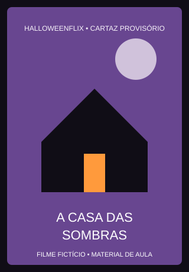
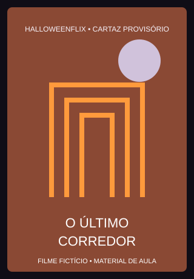
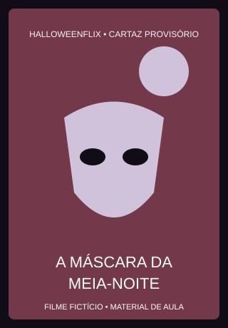
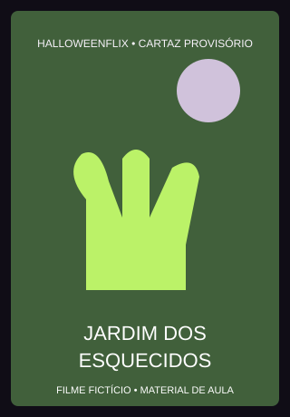
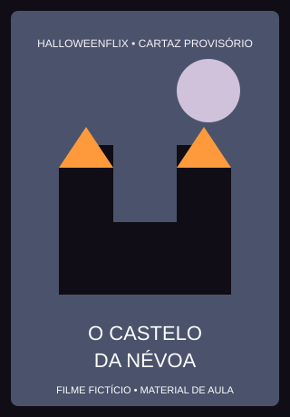

Catálogo de filmes
Os filmes e as classificações desta atividade são fictícios.

Psicose
Ano: 1960
Duração: 1h 49min
Direção: Alfred Hitchcock
Roteiro: Joseph Stefano (baseado no livro de Robert Bloch)
Suspense e terror psicológico | 14 anos
Ver detalhes
O Exorcista
Ano: 1973
Duração: 2h 12min
Direção: William Friedkin
Roteiro: William Peter Blatty (baseado em seu próprio livro homônimo)
Terror psicológico | 16 anos
Ver detalhes
O iluminado
Ano: 1980
Duração: 1h 59min
Direção: Stanley Kubrick
Roteiro: Stanley Kubrick e Diane Johnson (baseado no livro de Stephen King)
Ver detalhes
Alien, o oitavo passageiro
Ano: 1979
Duração: 1h 40min
Direção: Ridley Scott
Roteiro: Dan O'Bannon (história por Dan O'Bannon e Ronald Shusett)
Ver detalhes
Hereditário
Ano: 2018
Duração: 2h 06min
Direção: Ari Aster
Roteiro: Ari Aster
Ver detalhes